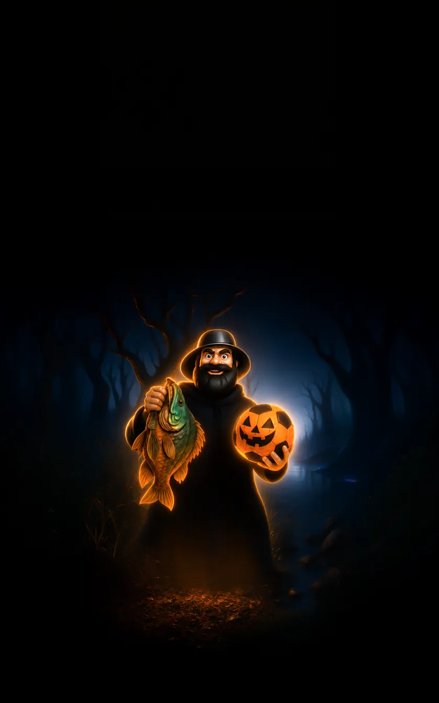

ЯК ЦЕ ПРАЦЮЄ?
-
Крок 1
Натисніть кнопку Info та ознайомтеся з умовами, зазначеними на зворотному боці картки.
-
Крок 2
Після ознайомлення з умовами натисніть ОТРИМАТИ БОНУС та перейдіть на сторінку депозиту. Внесіть мінімально необхідну суму для активації бонусу та натисніть Deposit.
-
Крок 3
Після завершення депозиту бонус буде зараховано на ваш акаунт. Рекомендуємо спочатку використати бонусні кошти, а потім перейти до Free Spins.